Chapter 17 Common types of graphs
In this chapter, you will learn how to create some of the most commonly used graphs, including bar plots, box plots, histograms, and scatterplots. These powerful visualization tools will enable you to explore and communicate your data effectively, gaining valuable insights along the way.
17.1 Bar charts
Bar charts, also called column charts, represent categorical data with rectangular bars whose height/length is proportional to the values they represent.
ggplot(data = sumAtl,
aes(x = city,
y = mean)) +
geom_col() +
coord_flip() # rotates plot 90 degrees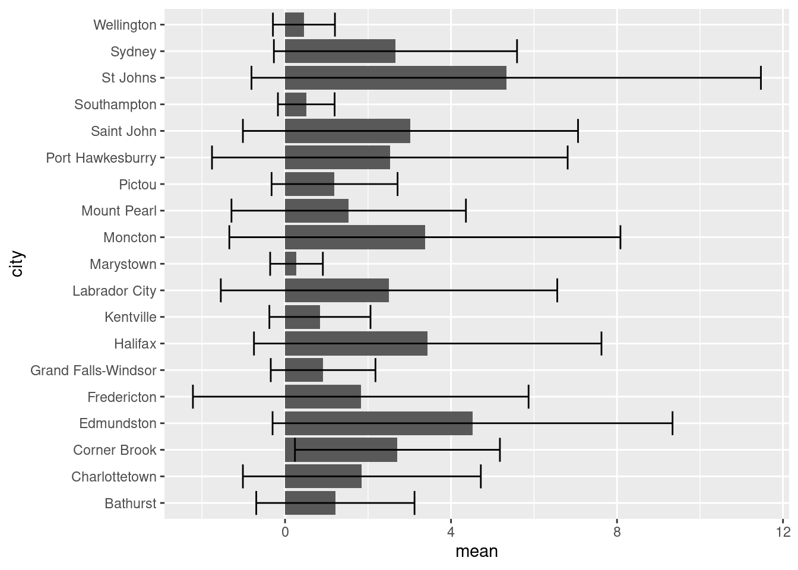
Pretty boring, but it’s gotten the job done. Note that we used coord_flip() to rotate our plot 90\(^\circ\) therefore the supplied x option of city is now plotted on the y-axis. This makes reading long categorical names (i.e. the names of cities) easier. coord_flip() doesn’t change anything else except the final orientation of the plot.
Also note that ggplot() includes geom_col() and geom_bar(). While both can be used to make bar charts. geom_col() is used when you want to represent values in the data (i.e. the precalculated mean as shown above), whereas geom_bar() makes the height of the bar proportional to the number of cases in each group.
17.1.1 Adding error bars
Any measurement always has an associated uncertainty/variability. These values are expressed visually via error bars demarcating the minimum and maximum variability and give a general idea of how precise a measurement is. In our sumAtl dataset we’ve calculated the standard deviation as a measure of uncertainty. In our example, we’ve used the standard deviation (sd) as a measure of uncertainty of our calculated annual means.
To plot error bars we use geom_errorbar() and pass the min and max values we want the error bars to be. In our case, the lowest value would be ymin = mean - sd, and the highest would be ymin = mean + sd. Our plotted error bars now indicate plus or minus one standard deviation from the mean.
ggplot(data = sumAtl, aes(x = city, y = mean)) +
geom_bar(stat = "identity") +
geom_errorbar(aes(ymin = mean - sd,
ymax = mean + sd)) +
coord_flip()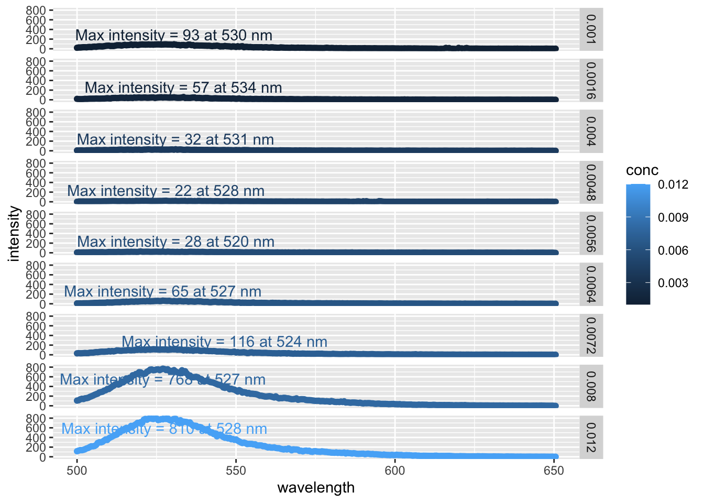
Some of the error bars indicate we could get a negative concentration of NO2. This is physically impossible, but it does suggest we should evaluate the distribution of our data (see below). Note that since we’re calculating error bar ranges on the fly, we’ve had to specify new aesthetic arguments to geom_errorbar().
17.1.2 Ordering bar charts
Often with bar charts (and similar plots), it’s useful to order the bars to help tell a story or convey information. We can effectuate this using fct_reorder():
ggplot(data = sumAtl,
aes(x = fct_reorder(city, mean),
y = mean)) +
geom_bar(stat = "identity") +
geom_errorbar(aes(ymin = mean - sd,
ymax = mean + sd)) +
coord_flip()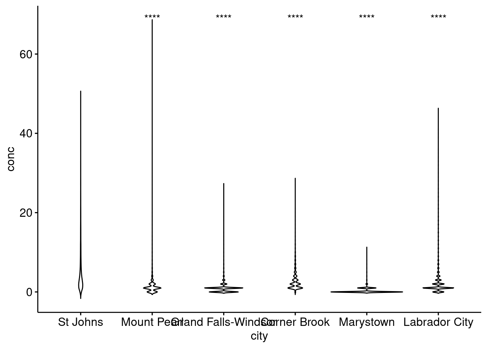
So in our aesthetics call for geom_bar we specified the x variable should be city, but ordered based on their corresponding mean value. Doing this has helped shed some light on trends in NO2 levels. For one, despite Labrador City having lower mean [NO2], we can now easily see that it has a larger variation in [NO2] than Corner Brook.
17.1.3 Grouping bar charts
Sometimes you’ll want to group bar charts as in the concentration of several chemicals in different locations. We can easily group bar charts in ggplot. Let’s go ahead and group our mean annual [NO2] by province by simply (1) reordering based on province, and (2) colour bars based on province:
ggplot(data = sumAtl,
aes(x = fct_reorder(city, p),
y = mean,
fill = p)) +
geom_bar(stat = "identity") +
geom_errorbar(aes(ymin = mean - sd,
ymax = mean + sd)) +
coord_flip()There are other ways to group your bar charts depending on the story you want to tell and the data you have. Please consult the Grouped, stacked and percent stacked barplot in ggplot2 page from the R-graph-gallery.
17.2 Box Plots
Box plots give a summary of the distribution of a numeric variable through their quartiles. You’ve no doubt seen them before, but they’re often misinterpreted. Let’s create a box-plot using geom_boxplot() and our Atlantic hourly NO2 measurements, then we’ll break down how to interpret it.
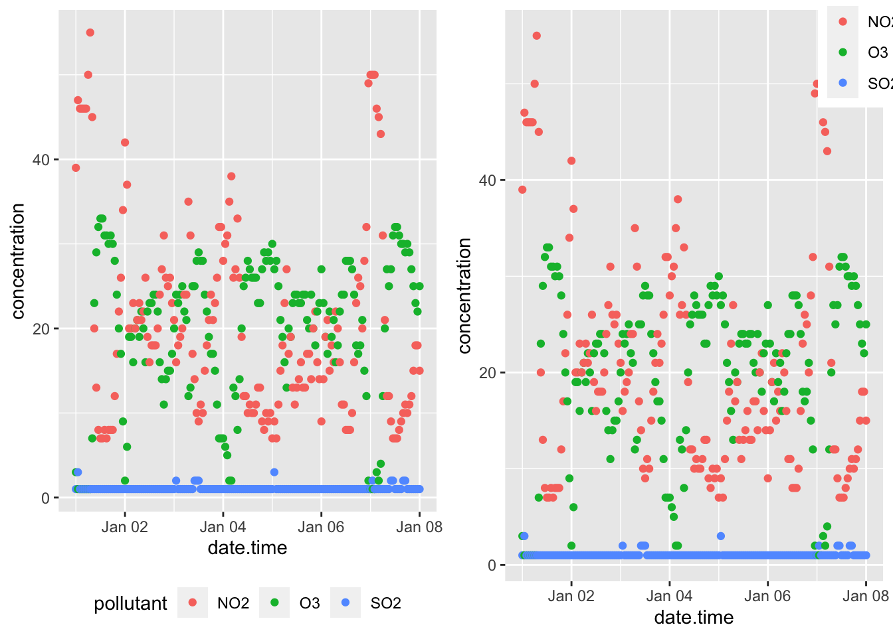
Let’s break down how to interpret one box before tackling the entire set. As previously mentioned, box plots describe data in their quartiles. Quartiles basically arrange the data from the lowest to highest value and split the data at three points:
- The first quartile (Q1) is halfway between the lowest value and the median (50%) of the data. In other words 25% of the data lies below Q1.
- The second quartile (Q2) is the median. 50% of the data lies below, and 50% lies above this point.
- The third quartile (Q3) is halfway between the median and the highest value in the data. In other words, 75% of the data lies below Q3.
The box in box-plots represents the range between Q1 and Q3. This is known as the inter-quartile range (IQR) and 50% of the total data falls somewhere inside this box. You can estimate the distribution by the symmetry of the box. if Q1 to the median is smaller than the median to Q3, the data has a positive skew (right sided skew), and vice versa.
Rounding it out, geom_boxplot() includes whiskers, the thin lines emanating out from the box. This is used to predict outliers and is calculated as \(outliers = \pm 1.5 \times IQR\). Anything outside the whiskers is considered an “outlier” or an extreme point, and is plotted individually.
Putting this all together, let’s look at the [NO2] for St. Johns city:
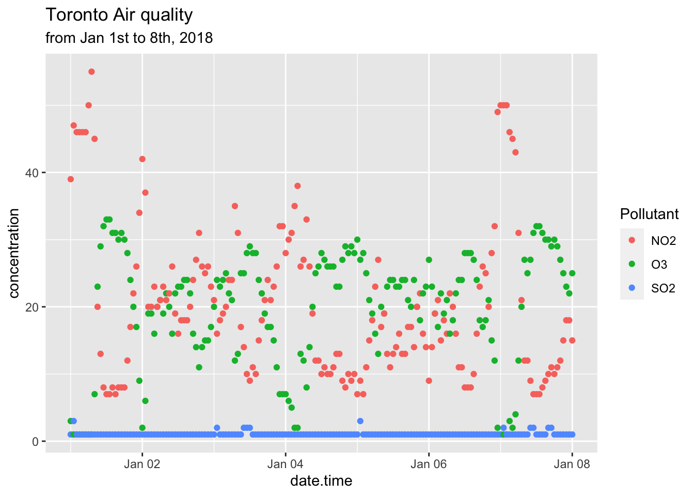
Note that we’ve plotted the actual distribution of the data. Prior to computers, this was incredibly difficult to do, hence the use of box plots which can be drawn knowing only five points. However, the simplicity in calculating box-plots means they can hide trends and observations of your data. On top of that, they aren’t very intuitive (see the score of text you just read to understand them). Consequently, we strongly recommend you explore some of the Box plot alternatives unless you explicitly need to create box-plots.
17.2.1 Box plot alternatives
The first alternative to box-plots is the violin plot which is made using geom_violin(). It is similar to the box-plot, but instead of displaying the quartiles, it plots the density within each group and is a bit more intuitive than box-plots. While the example below isn’t the most convincing given the scale of the dataset, violin plots are useful for identifying underlying trends in the distribution of data. For example, in the plot below we can see that some towns such as Marystown has days where [NO2] = 0 ppb, whereas Grand Falls-Windsor has a large number of days with low, but measurable levels of NO2. This might be because of differences in regional ambient levels of NO2.
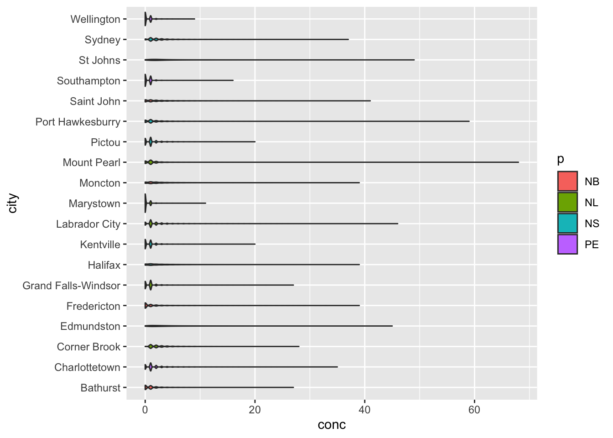
Another alternative is to plot the points over top of the box-plot. You’ve encountered this example in R coding basics. Truth be told, there are countless ways to visualize distribution.
17.2.2 Statistical comparisons between groups
Often box-plots are used to show differences in distributions between two groups (i.e. population in Location A vs. Location B). How you determine this statistically is a different story, but packages such as ggpubr have many built-in functionalities to display the results of these outcomes.
From our NO2 data, St. Johns appears to have the highest levels of NO2. Let’s apply a pairwise test against other Newfoundland communities to see if our observation is statistically significant based upon the results of a Wilcoxon test.
nfld <- atlNO2 %>%
filter(p == "NL") # only nfld stations
# Code from ggpubr website
ggpubr::ggviolin(nfld, x = "city", y = "conc") +
ggpubr::stat_compare_means(ref.group = "St Johns",
method = "wilcox.test",
label = "p.signif") 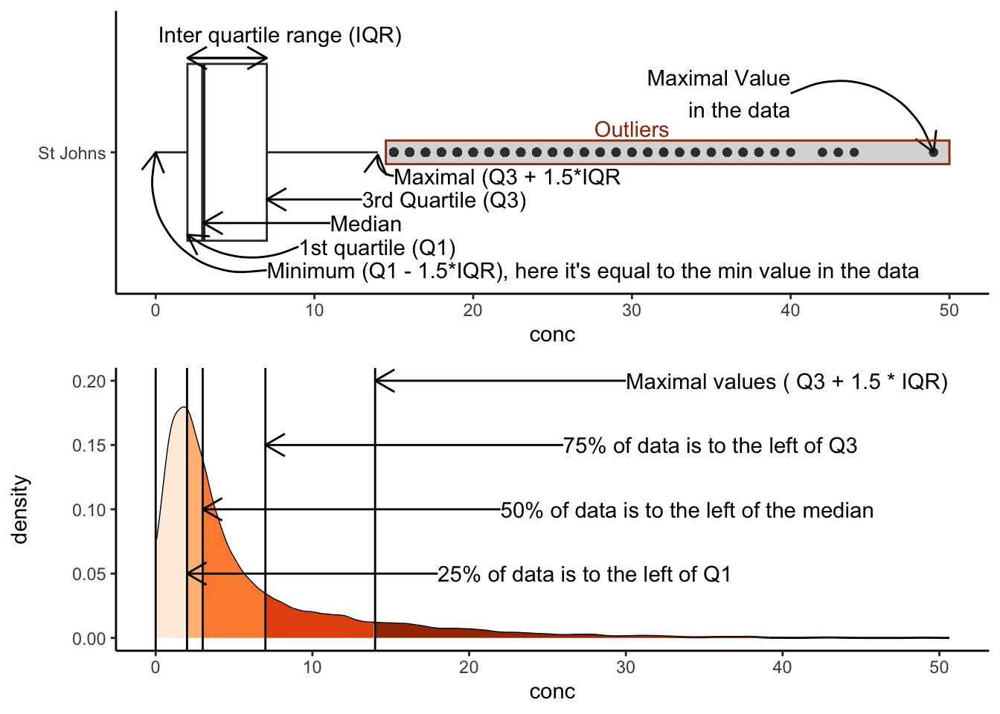
Based on the results of our test, all other stations in Newfoundland have statistically significant differences in the median NO2 values. Note the validity of this statistical approach to this particular problem is called into question based on the distribution of the data etc. We’ve included it to demonstrate how to label significance on plots, rather than an explicit discussion on statistics.
For more information on ggpubr, adding p-values and significance labels, and different pairwise statistical test please visit ggpubr: Publication Ready Plots.
17.3 Histograms
Histograms are an approximate representation of the distributions of numerical data. They’re an approximation because you arbitrarily “bin” your data into groups and then count the number of values inside that bin. The frequency, or count, in each bin is represented by the height of a rectangle whose width equals that of the bin. geom_histogram() is used to create histograms:
ggplot(data = subset(atlNO2, city = "St Johns"),
aes(x = conc)) +
geom_histogram() +
labs(subtitle = "Distribution of St. Johns' NO2 levels in 2018")## Warning: In subset.data.frame(atlNO2, city = "St Johns") :
## extra argument 'city' will be disregarded## `stat_bin()` using `bins = 30`. Pick better value with `binwidth`.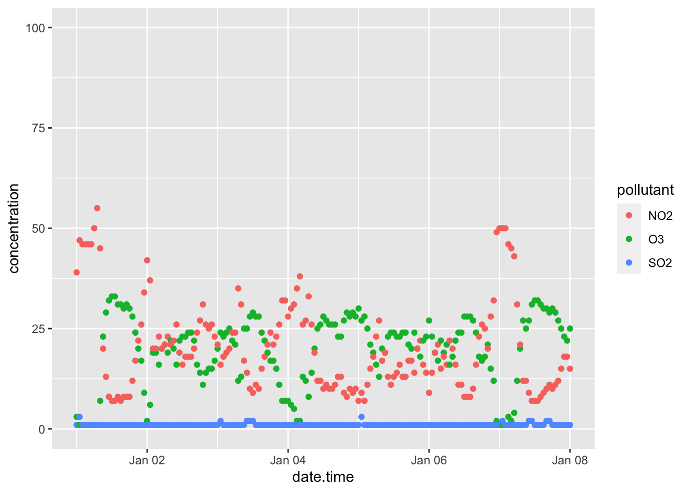
We can alter the resolution of our histogram by modifying the width of the bins using the binwidth argument or by specifying the number of bins with the bins argument. The former is useful when you don’t know the range of your data, whereas the latter is useful is you do (i.e. numbers between 0 and 100).
ggplot(data = subset(atlNO2, city = "St Johns"),
aes(x = conc)) +
geom_histogram(binwidth = 1) +
labs(subtitle = "Distribution of St. Johns' NO2 levels in 2018, binwidth = 1")## Warning: In subset.data.frame(atlNO2, city = "St Johns") :
## extra argument 'city' will be disregarded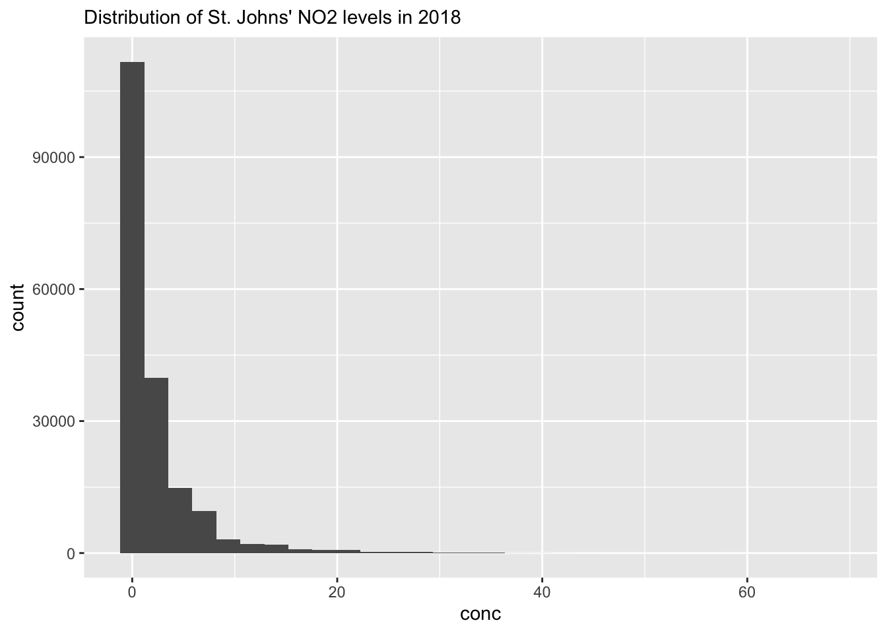
17.3.1 Multiple histograms
While you can overlap histograms, it gets difficult to read with more than a handful of datasets. If we wanted to plot histograms of all the cities in our dataset we would have to use a small multiple via the facet_grid() or facet_wrap() arguments. facet_grid() allows you to arrange many small plots on a grid defined by variables in your dataset (i.e. columns for provinces, and rows for different pollutants). In the example below we’ve used facet_wrap(~city) which creates a 2D layout of histograms of each cities NO2 values. Note the tilde , ~, preceding in ~city.
ggplot(data = atlNO2,
aes(x = conc, fill = p)) +
geom_histogram(binwidth = 1, position = "identity") +
facet_wrap(~city)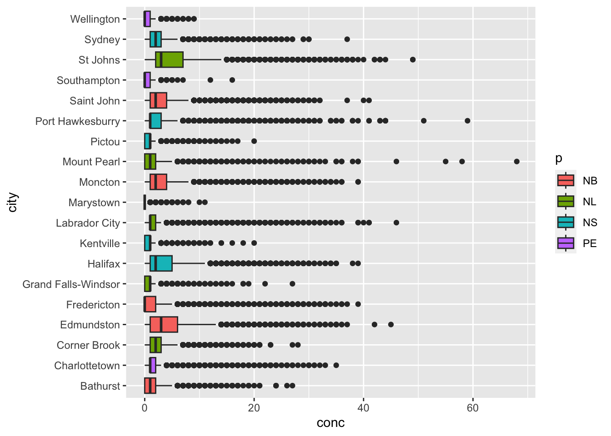
17.4 Scatter plots
Scatter plots display values of two variables, one of which is a continuous variable. Each data point is plotted as an individual point. You’ve already learned the basics of scatter plots in Chapter 14. Now, we’ll touch upon some things you can do to improve your scatter plots.
17.4.1 Marginal plots
You can easily combine a scatter plot with marginal plot. This is useful to summarize one dimension of our scatter plot. With the Toronto air quality data that we’ve already familiarized with, we might want to know the distribution of concentrations of the individual pollutants. Using the ggExtra package and the ggMarginal() function we can get the following:
## Rows: 507 Columns: 8
## ── Column specification ────────────────────────────────────────────────────────
## Delimiter: ","
## chr (3): city, p, pollutant
## dbl (4): naps, latitude, longitude, concentration
## dttm (1): date.time
##
## ℹ Use `spec()` to retrieve the full column specification for this data.
## ℹ Specify the column types or set `show_col_types = FALSE` to quiet this message.# note we're storing our plot in the variable 'torPlot'
# and we're not plotting SO2
torPlot <- ggplot(data = subset(torontoAir, pollutant != "SO2"),
aes(x = date.time,
y = concentration,
colour = pollutant)) +
geom_point() +
theme(legend.position = "bottom")
# We're passing our torPlot to the ggMarginal Function
ggExtra::ggMarginal(torPlot, margins = "y", groupColour = TRUE, groupFill = TRUE)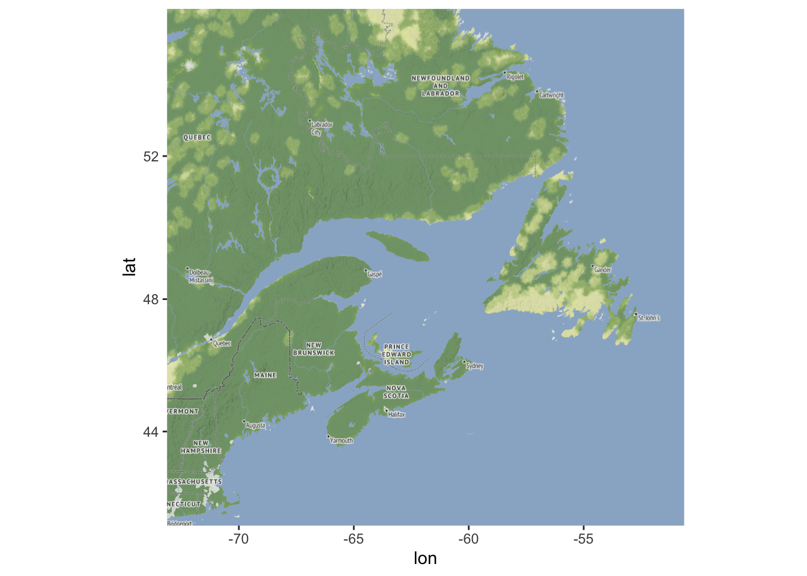
We can now see the distributions of NO2 and O3 overlaid on the vertical axis. Note that ggMarginal() only works with scatter plots.
There are plenty of other marginal options scattered about various packages. You can see many of them in action (with beautiful examples) at Tufte in R by Lukasz Piwek.
17.5 Exercise
There is a set of exercises available for this chapter!
Not sure how to access and work on the exercise Rmd files?
Refer to Chapter 3.3 for step-by-step instructions on accessing the exercises and working within the UofT JupyterHub’s RStudio environment.
Alternatively, if you’d like to simply access the individual files, you can download them directly from this repository.
Always remember to save your progress regularly and consult the textbook’s guidelines for submitting your completed exercises.